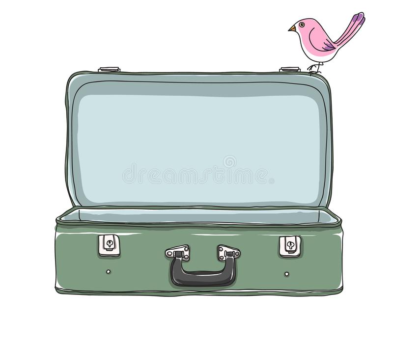
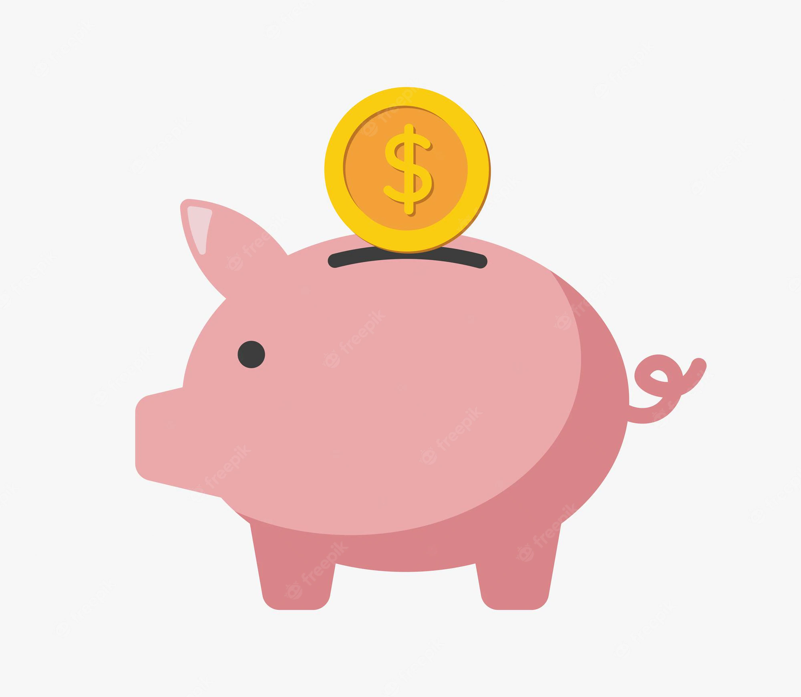

-
1. Elegir bien el destino
El truco está en informarse a fondo sobre el destino, por ello, antes de reservar boletos de avión hay que hacer una búsqueda sobre los siguientes ítems. Precios de alojamientos, de comida, de transportes -urbano, interurbano, etc-, precio del visado si fuera necesario, y precios de las entradas para visitar los museos y los atractivos principales.
-
2. Evitar los viajes en temporada alta
Es muy común que los viajeros frecuentes recomienden esto. Efectivamente, viajar en épocas de temporada baja suele resultar mucho más barato gracias a que hay una menor demanda de servicios turísticos. Hay que sacrificar los días soleados y largos si lo que se busca es viajar por poco dinero.
-
3. Ahorrar todo lo posible en vuelos
Si bien pareciera ser una obviedad, lo que SE recomienda es en primer lugar ser flexible con las fechas e incluso con el destino. En segundo lugar, utilizar sitios web comparadores -incluso es bueno comparar entre webs de esta clase- para poder filtrar dentro de todas las opciones de vuelos.
-
4. Viajar ligero de equipaje
Muchas veces llevamos cosas que ni siquiera retiramos del bolso durante los viajes, por eso hay que intentar reducir la cantidad de ropa y lavarla en el destino.
-
5. ¡Ahorrar!
Muchas veces se cree que esas personas que se la pasan viajando es porque nacieron ricas. Pero esto no es asi, sino que todos ellos tienen algo en común: son ahorradores. Son personas que trabajan durante el año y gastan lo justo y necesario para poder ahorrar. “Después, invierten ese dinero en lo que más les gusta hacer: ¡viajar! Así de fácil”.